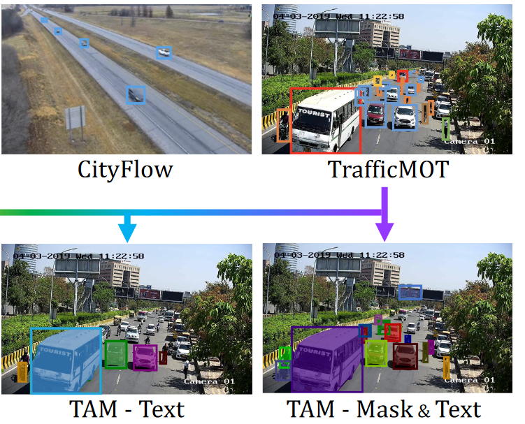
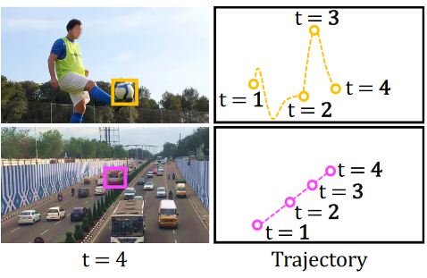
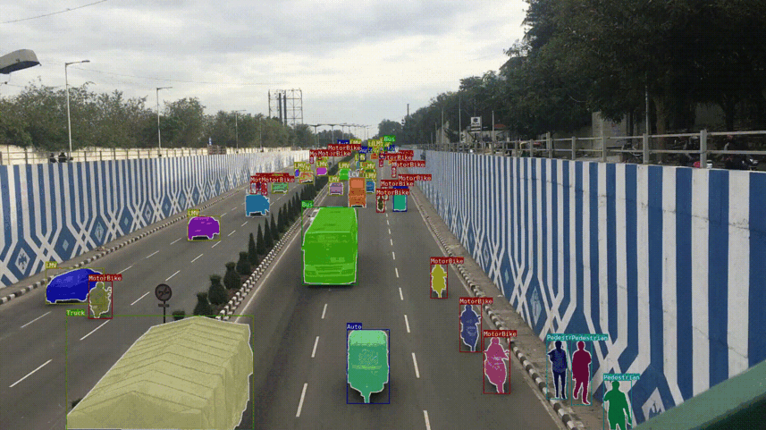
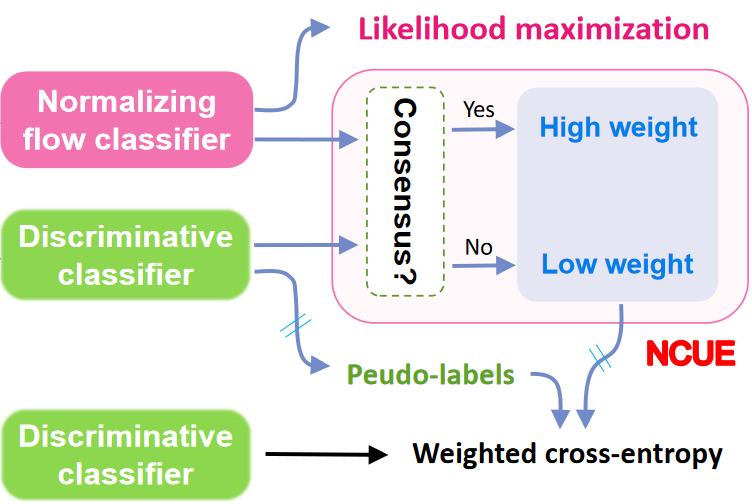

AI Based Traffic Analysis from Video Data for Assessing Pollution Levels, Road Safety and Population Health in Major Cities
Oracle for Research Project Award

Transport has substantial health, environmental, social, and economic impacts and often these effects are stark with rapidly rising motorisation. The reduction of traffic injury burden and air pollution is high on the WHO agenda. However, what we lack at the moment is a mechanism to measure traffic volume in a consistent manner. We aim to develop novel AI techniques for traffic flow analysis that are robust and generalisable at large-scale. Traffic flow analysis from images and videos boils down to segmenting vehicles and people from surroundings. Therefore, this project focus on the development of robust instance and semantic segmentation models. Our primary focus is large urban cities in the UK and other countries for example India. The research in this project addresses the sustainable development goal of Sustainable cities and communities and climate action.
This project was supported with funding from the Oracle for Research Project Award.
People
Research Leader

Collaborators
Alphabetic Order
University of Cambridge
University of Cambridge
University of Cambridge
University of Cambridge
University of Cambridge
University of Cambridge
Publication
|  | TrafficMOT: A Challenging Dataset for Multi-Object Tracking in Complex Traffic Scenarios L Liu, Y Cheng, Z Deng, S Wang, D Chen, X Hu, P Lio, C-B Schonlieb and AI Aviles-Rivero Preprint Version — Arxiv-Link |
|  | Traffic Video Object Detection using Motion Prior L Liu, Y Cheng, D Chen, J He, P Lio, C-B Schonlieb and AI Aviles-Rivero Preprint Version — Arxiv-Link |
|  | TrafficCAM: A Versatile Dataset for Traffic Flow Segmentation Z Deng, Y Cheng, L Liu, S Wang, R Ke, C-B Schönlieb and AI Aviles-Rivero Preprint Version — Arxiv-Link ¦¦ Project Webpage |
|  | NorMatch: Matching Normalizing Flows with Discriminative Classifiers for Semi-Supervised Learning Z Deng, R Ke, C-B Schönlieb and AI Aviles-Rivero Preprint Version — Arxiv-Link |
Prior Work
 | A Three-Stage Self-Training Framework for Semi-Supervised Semantic Segmentation R Ke*, AI Aviles-Rivero*, S Pandey, S Reddy and C-B Schönlieb (*Equal Contribution) IEEE Transactions on Image Processing Arxiv-Link || Journal Link || Media Coverage Code Repository |